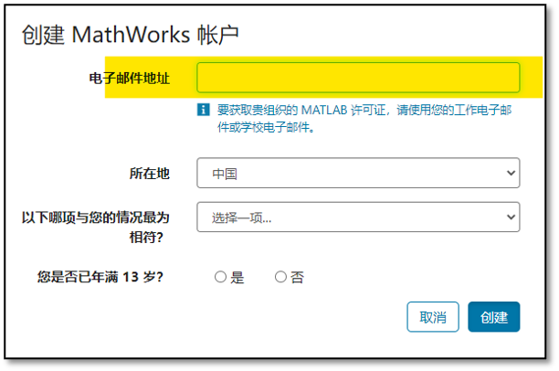
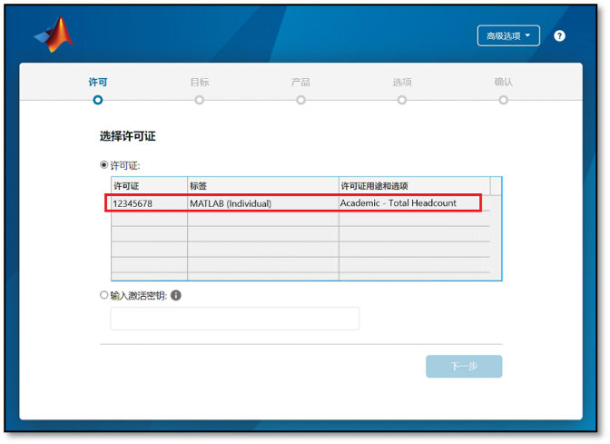
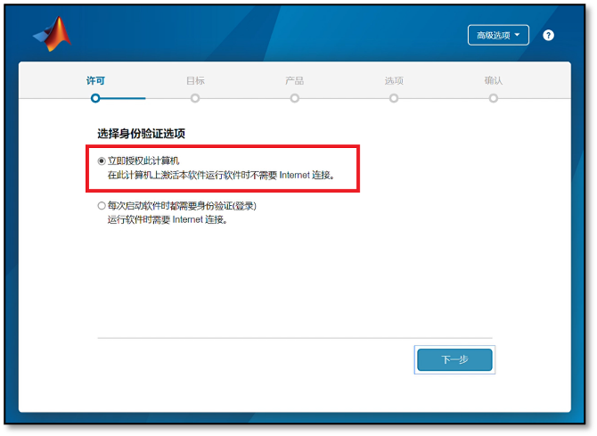
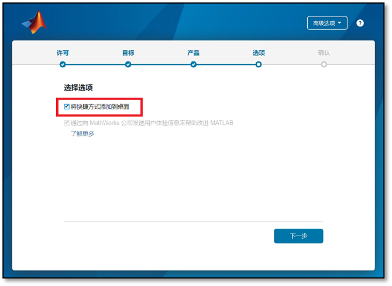

总览
西南财经大学面向在校师生提供MATLAB校园版软件使用，全体师生可以在校属电脑和个人电脑上，部署MathWorks产品，包括英文版本和简体中文版本，并享有在线资源服务等内容。MATLAB校园版包含个人版与网络版（机房版）两种模式，个人版适合安装个人电脑(可离线使用)，网络版（机房版）适合实验室、机房、集群。
软件安装前的准备工作及注意事项
- 确保安装MATLAB软件的电脑满足硬件最低配置及系统要求，确认方法请参考 MATLAB 系统要求。
- 在安装软件之前，请关闭系统防火墙。
- 个人版MATLAB需要定期激活，到期后如果用户还是本校师生员工，会自动连接MathWorks服务器激活，用户只需要在出现激活提示时点击确定即可。
个人版在线安装指南
-
注册MathWorks账户
访问账户注册页面：https://ww2.mathworks.cn/mwaccount/account/create 或 https://www.mathworks.com/mwaccount/register。
请务必使用有效的学校邮箱（以 @swufe.edu.cn 结尾）作为注册邮箱。
 -
下载安装程序
登录后，点击页面上的“下载”按钮，下载最新版的 MATLAB。

-
运行安装程序
运行下载的安装程序，选择“使用 MathWorks 账户登录”的安装方式。
 -
接受许可协议
接受许可协议，然后点击“下一步”。
-
登录账户并选择许可证
输入您之前注册的 MathWorks 账户和密码，并选择列表中唯一的“Academic - Total Headcount”许可证。
 -
选择安装产品
根据您的需求选择需要安装的产品和工具箱。如果您不确定，可以保持默认选择。
 -
确认安装
确认安装选项，然后点击“开始安装”。

-
完成安装与激活
安装完成后，软件将自动激活。您现在可以开始使用 MATLAB。
遇到问题？
如果安装或激活过程中遇到任何问题，请联系 alone@swufe.edu.cn。